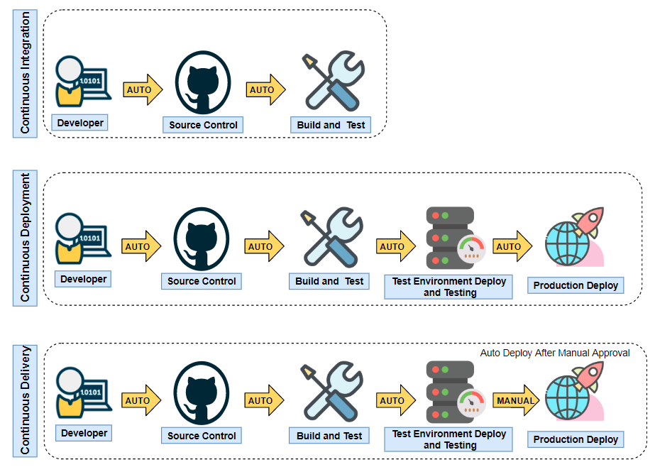

Team Foundation CI - A proposal
Created by Moacy Barros
Agenda
Current development process
Static code analysis is not mandatory/forced
Unit tests execution is not mandatory
Static code analysis rules tuning

Why that matters?
Constant quick and reliable feedback
Transparency
Favorable environment for unit test safe net development
Continuous Integration to the rescue
Continuous Integration
Continuous Deployment
Continuous Delivery
The contender:
GitHub Actions
Workflow file